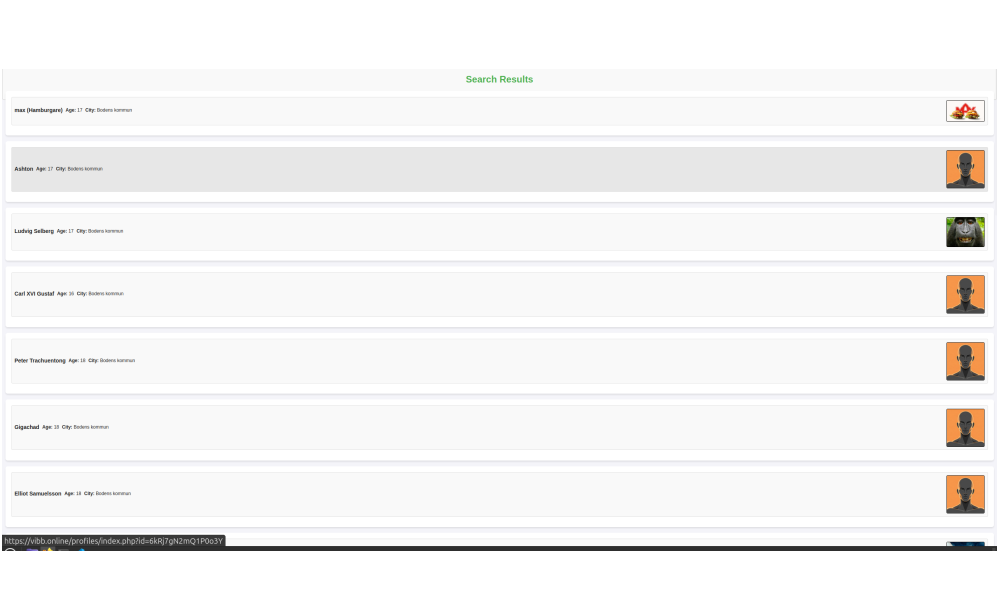

Vibb.online
Vibb.online is a satirical web-based parody of modern dating apps, designed to mock the superficial and repetitive nature of online matchmaking platforms. As the lead developer, I oversaw both the frontend and backend development of the project using PHP, CSS, and JavaScript.
After logging in with demo credentials, users are greeted with humorous profiles, over-the-top bios, and a mock chat system designed to poke fun at real-life dating app clichés. I developed a fully functional login system using PHP sessions, built randomized profile generation logic, and styled the interface to mimic the sleek but sometimes shallow appearance of popular apps like Tinder or Bumble.
I also implemented responsive layouts to ensure mobile usability, and scripted interactive elements to simulate swiping, matching, and messaging features—though all interactions are intentionally exaggerated or broken for comedic effect. The entire experience is self-contained and was designed to highlight both my technical abilities and my creativity when it comes to storytelling and UI design.
This project deepened my understanding of full-stack web development, user session management, and responsive design. It was also an opportunity to experiment with content-driven UX and dark humor in digital interfaces.